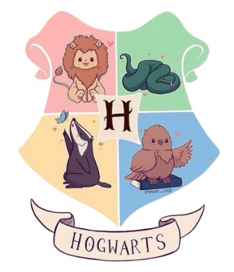
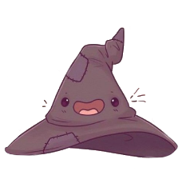

O que são as casas de Hogwarts?
Em Hogwarts, os alunos são divididos em quatro casas diferentes desde o primeiro dia de aula. Cada casa tem características únicas e juntas formam toda a magia da escola. O Chapéu Seletor analisa a personalidade, os valores e os talentos de cada bruxo antes de decidir onde ele pertence. Não importa em qual casa você esteja: todas têm sua importância para a história da magia.
Grifinória
Conhecida pela coragem, bravura e determinação. Se você gosta de aventuras (mesmo perigosas) e de proteger quem ama, essa é a sua casa!
Sonserina
Casa da ambição, astúcia e liderança. Se você gosta de desafios, estratégias e sabe muito bem o que quer da vida, Sonserina te espera.
Corvinal
Onde estão os inteligentes, criativos e curiosos. Se você ama aprender, criar teorias e valoriza a sabedoria, Corvinal é seu lugar perfeito para brilhar.
Lufa-Lufa
A casa dos pacientes, leais e trabalhadores. Aqui ficam os bruxos que sempre ajudam quem precisa, são humildes e têm o coração mais generoso de Hogwarts.
Pronto para ouvir o que o Chapéu Seletor tem a dizer sobre você?
Clique no Chapéu Seletor e descubra sua casa!
